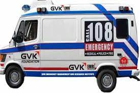

 GVK EMRI Emergency Management and Research Institute is a pioneer in Emergency Management Services in India As a not-for-profit professional organization operating in the Public Private Partnership(PPP) mode GVK EMRI is the only professional Emergency Service Provider in India today GVK EMRI handles medical, police and fire emergencies durough the "1-0-8 Emergency service" This is a free service delevered through state-of-art emergency call response centres and has over 2600 ambulances across Andhra Pradesh, Gujarat Uttarakhand, Goa, Cha Rajasthan Karnataka Assam Meghalaya and Madhya Pradesh. With the expansion of fleet and services set to spread across more states, GVK EMRI will have more than 10000 mbulances covering over a billion population by 2011